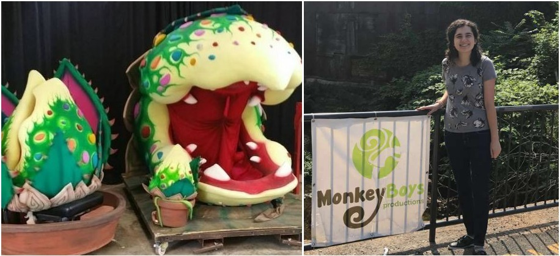

1 / 3

The final version of my hopping device
2 / 3
Benchtop test of the hopping mechanism
3 / 3

A sketch model of my hopper
❮
❯
LEGOland Discovery Center Philadelphia is a creative playland for kids where they are inspired to build and use their creativity. My job was to engage the children in the many activities at LEGOland both on the floor and in the Creative Workshop. My goal was to create unique interactions with the customers and give them a personalized experience to remember. This included working with the kids to help them find the pieces they needed to build their creations or finding a place to put their hard work on display.
In the Creative Workshop, I taught classes on how to build a small creation out of LEGO bricks. Each month I would memorize a new set of instructions and recite those instructions in 15-minute classes. This included demonstrating each step on an overhead camera and slightly modifying the instructions each time so that they became the clearest to understand and actuate. I also had to make sure that everyone was on the correct step, so no one became frustrated or left behind.
In between each class, I also worked with the Master Model Builder to design and build new displays. There I worked on my craft and learned correct building and gluing techniques. My long-term project was to create an organizational system for storing the different shape and color bricks. I took the initiative to sort and label the more uncommon pieces as well as managing taking apart and returning old builds to their correct drawers.
One of my favorite roles was helping with special events like Batman Weekend and the Low Sensory Days. Batman Weekend was a blast and I was constantly problem-solving to reduce the chaos that ensued. For the Low Sensory Days, I received extra training from the Ruttenberg Autism Center on how to work with children on the autism spectrum. It was an eye-opening opportunity and I am very grateful that LEGOland provides this opportunity for kids to experience LEGOland without becoming overwhelmed by the many loud sounds and flashing lights.

Monkey Boys Productions is a commission based shop that creates puppets, props, costumes and set for a variety of creative endeavors. They have built puppets for various Broadway shows and popular late-night television shows like Saturday Night Live. They are best known for the motorized podium that Melissa McCarthy used to play Sean Spicer on SNL.
This past summer, I worked with a team of other apprentices to build a second set of puppets for Little Shop of Horrors. This included using the bandsaw and belt sander to cut and shape over 50 leaves, 75 thorns, and 150 warts. I also learned proper technique in tracing patterns, cutting foam using many types of blades and gluing foam using all-purpose cement. We also practiced mixing parts for expanding foam and mixed and used resin to make fiberglass molds.
My personal project was in organizing the foam storage. In doing so I learned how to identify the different types and densities of the foam. I also experimented with carving the foam using different blades and a hotwire.

MilkCrate is an award-winning startup that provides a database of sustainable actions and companies to the public and private sector. Their free mobile app displays a map of sustainable business and their new service MilkCrate for Communities helps companies track their employee’s sustainable actions through a point-based reward system.
As an intern, I helped to expand the database of sustainable businesses and completed odd jobs around the office. For example, I assisted in the production of a recipe video that utilized the ingredients in their summer CSA. I also was often asked to go around to the other startups in the co-working space to receive feedback on marketing materials.
I loved working for a startup in a co-working space as I was motivated by the other driven individuals around me. I hope to have the opportunity to work in a similar setting again as I love the fast pace of the startup scene.
Bryn and Danes is a community centered, healthy, fast food franchise. On the menu are smoothies, wraps, salads, breakfast bowls and quesadillas and the customers can customize all of the ingredients through the touchscreen ordering system. I worked in the kitchen, making wraps and completing orders with speed.
Working for the opening of a restaurant was a chaotic but really fun experience. Every day presented itself with new challenges and problems to solve on top of the mad lunch and dinner rushes. Also, the CEO Bryn was often around to check in on the employees and we often chatted about the business side of the franchise.